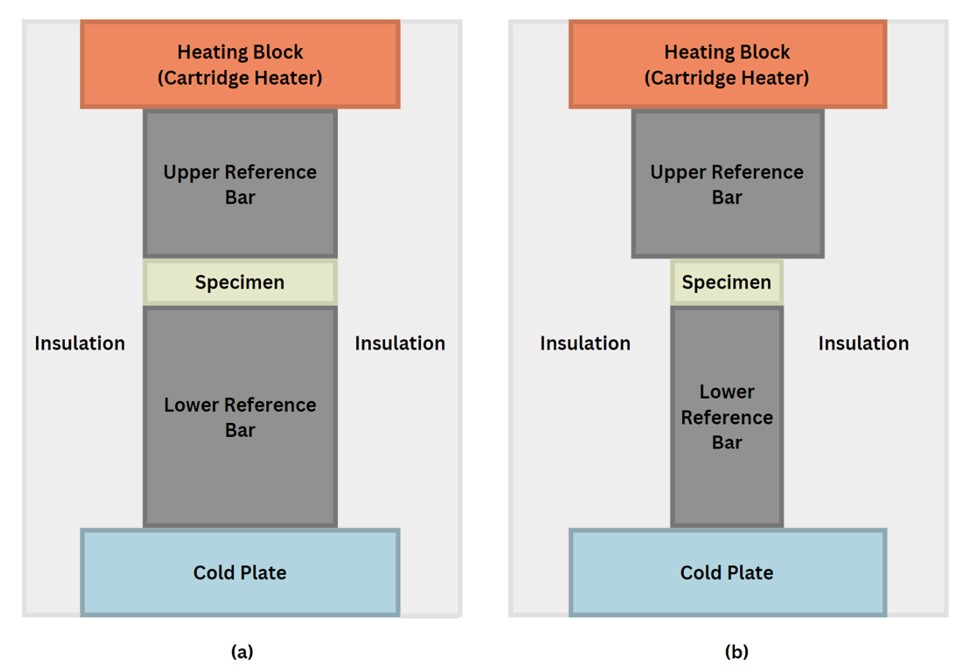

I’m also working on developing a flexible thermal conductivity measurement system for the UW-Madison Laboratory for Energy Transport and Storage (LET+S). The first use case will be measuring the thermal conductivity of phase change materials (PCMs), which is of interest for developing high-efficiency thermal energy storage devices.
The motivation for this research stems from the fact that phase change materials (PCMs) have the potential to be a valuable resource in the renewable energy sector [1]. One challenge with implementing renewable energy on a large scale is its reliability. For example, solar energy is intermittent. It cannot be harnessed during the night or when it is overcast. The solution to the intermittency issue is to store the energy in batteries, which allows it to be accessed at later times. Thermal energy storage systems that utilize PCMs represent a promising approach, as these systems can have a better lifetime than typical electrochemical batteries because the PCMs will not undergo major degradation with time.
The effectiveness of PCMs depends on two key factors: (1) the amount of energy that they can store (which is determined by the latent heat of the phase transition), and (2) how quickly that energy can be accessed (which is determined by the thermal conductivity) [2]. Though central to the viability of thermal energy storage systems, the thermal properties of many emerging PCMs are poorly understood and there are key performance trade-offs that must be considered. For example, materials with high latent heat of phase change (a good ability to store a large amount of energy) tend to have poor thermal conductivity (a poor ability to access that energy quickly), and vice versa. Composite PCMs combat this trade-off by combining a PCM with a high latent heat of phase change in a conductive lattice [3]. This composite material will have a thermal conductivity that is different from either material it is made of, so a thermal conductivity test facility is critical to characterize its novel thermal conductivity.
Thermal conductivity is the measure of a material’s ability to conduct heat. It is an intrinsic material property that is independent of the object’s geometry. Thermal conductivity is related to the heat transfer rate according to Fourier’s Law: q = -kA(dT/dx), where q is the heat transfer rate, k is the thermal conductivity, A is the cross-sectional area, and dT/dx is the temperature gradient [4]. Fourier’s law shows that as thermal conductivity increases, the magnitude of the heat transfer rate also increases. While thermal conductivity is a material property, it can change as the material changes phase.
Phase change materials (PCMs) are materials that can store thermal energy through the latent heat of their phase transitions. Latent heat is the energy released or absorbed by a material during its phase changes. Typically, PCMs used for energy storage leverage the solid-to-liquid phase transition (or vice versa) [1]. As shown in the image below, PCMs absorb thermal energy and store it during a solid to liquid phase transition. This energy is then released during a liquid to solid phase transition.
There are two general approaches to measure thermal conductivity: steady state methods and transient methods. In the steady state approach, the data used to calculate the thermal conductivity is measured once a steady temperature gradient is established through the material. In the transient approach, the thermal conductivity is measured based on a thermal time response to a pulsed heat input. For this facility, we decided to go with a steady state method because they are often more accurate than transient methods [6], [7].
One traditional steady state method is the 1D reference bar apparatus. The 1D reference bar apparatus establishes a steady temperature gradient through a specimen with a known thickness. As shown in Fig. 2a, the insulation minimizes heat loss to the surroundings, which ensures that heat flows in one direction through the specimen. It consists of a heating block (a cartridge heater mounted in a copper block), two reference bars of known thermal conductivity, the specimen, and a cold plate. The heating block heats the top of the upper reference bar to a constant temperature, and the cold plate keeps the bottom of the lower reference bar at a constant temperature. The specimen is sandwiched between the upper reference bar and the lower reference bar. In this set-up, the reference bars’ cross-sectional area is the same as the cross-sectional area of the specimen. The major drawback of this method is that it requires very precise alignment. The hardware necessary for this alignment is often expensive and technically challenging to implement.
One way to decrease this uncertainty is to use a stepped bar apparatus. As shown in Fig. 2, its set-up is identical to a 1D reference bar apparatus, but instead, the upper reference bar has a greater cross-sectional area than the specimen and the lower-reference bar. Therefore, the specimen only has to be aligned to the lower reference bar, which decreases the contact area uncertainty. The measurement system is the same, but due to the difference in area, the temperature profile in the upper reference bar is nonlinear. This changes how the temperature at the interface is extrapolated, but Fourier’s law is still used to calculate thermal conductivity [8]. Due to this decreased uncertainty and easier technical implementation, we decided to use this approach for the facility.
Over the course of the development process, I developed two numerical models. The first is a 2D heat transfer model that simulates how heat flows through the reference bars and the specimen. It used a finite-difference method to simulate the heat flow. First, a grid of nodes was created in the URB, LRB, and specimen. Then, as shown in the image below, an energy balance is calculated on each node.
The second model is a MATLAB model that calculates the thermal conductivity given the temperature measurements at locations corresponding to thermocouple locations using Fourier’s Law. This model is currently being used as the data analysis code. Below are two images. The first is a representative heat map that was created with the data from the first numerical model. The second is the resuting graphs of the second numerical model that were created using the same data.
The facility is currently built and is undergoing initial validation testing and uncertainty quantification. Here's some pictures of what it looks like now!

I presented the below poster at a WISE (Women in Science and Engineering) poster session.
For more information about LET+S, please visit this website.